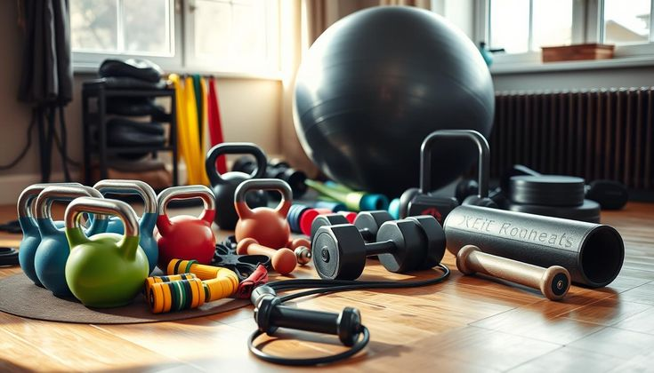

Nutrition & Vitamins
Proper nutrition is the absolute foundation of physical vitality and long-term wellness. Supplying your body with a balanced mix of macro and micronutrients ensures optimal organ function, enhanced mental clarity, and sustained daily energy levels.
- Vitamin C & Zinc: Potent antioxidants that strengthen the immune system, lower oxidative stress, and accelerate tissue repair.
- Vitamin D3 & Calcium: Critical for maintaining bone density, supporting joint health, and regulating overall muscle contractions.
- B-Complex Vitamins: Plays a vital role in cellular energy production, nerve function, and metabolic health.
- Omega-3 Fatty Acids: Essential healthy fats that support brain performance, reduce arterial inflammation, and promote cardiovascular health.
- Iron & Magnesium: Iron optimizes oxygen transport in the blood, while magnesium relaxes muscles and prevents painful cramping.
Pro Tip: Try to get most of your vitamins through whole foods first, using supplements only to fill specific nutritional gaps.
Lifestyle & Wellness
Wellness is a active process of becoming aware of and making choices toward a healthy and fulfilling life. It encompasses physical, mental, and emotional harmony to shield you from burnout and chronic daily stress.
- Stress Management: Practice daily mindfulness, deep-breathing routines, or meditation to lower cortisol levels.
- Work-Life Balance: Define strict boundaries between professional work hours and personal downtime to avoid mental exhaustion.
- Optimal Hydration: Drink 2.5 to 3.5 liters of water daily to maintain cognitive function, digestion, and skin health.
- Digital Detox: Reduce screen exposure during late evenings to relax your eyes and improve overall mental peace.
- Sunlight Exposure: Get 10–15 minutes of early morning natural sunlight to regulate your circadian rhythm and boost mood.
Pro Tip: Small, consistent daily practices yield much better mental health results than sporadic relaxation days.
Workout Gear

Investing in high-quality fitness gear isn't just about appearance—it directly impacts your athletic efficiency, comfort, and injury prevention. The right equipment supports proper form and maximizes training results.
- Specialized Athletic Footwear: Shoes designed for running, heavy lifting, or cross-training protect your joints and improve alignment.
- Moisture-Wicking Activewear: Breathable, sweat-resistant fabrics regulate body temperature and prevent skin chafing during intense sessions.
- Versatile Resistance Bands: Excellent tools for dynamic warm-ups, mobility drills, and progressive strength training.
- Smart Fitness Wearables: Trackers to accurately monitor heart rate zones, daily steps, active calories, and recovery metrics.
- Supportive Gym Accessories: Lifting belts, wrist wraps, and grip straps provide necessary stability when moving heavy weights.
Pro Tip: Replace your running shoes every 300–500 miles to maintain adequate cushioning and arch support.
Healthy Meals
Eating healthily doesn't mean eating boring meals. By focusing on nutrient-dense, whole foods, you can construct delicious plates that stabilize blood sugar levels and sustain your energy continuously throughout the day.
- Lean Protein Sources: Chicken breast, eggs, tofu, lentils, and fresh fish aid muscle recovery and keep you full longer.
- Complex Carbohydrates: Rolled oats, brown rice, quinoa, and sweet potatoes release energy gradually without blood sugar spikes.
- Healthy Fats: Avocados, raw nuts, chia seeds, and extra virgin olive oil boost brain function and hormone production.
- Fiber-Rich Vegetables: Leafy greens, broccoli, and colorful veggies promote smooth digestion and gut health.
- Smart Portion Control: Use the plate method: 1/2 vegetables, 1/4 protein, and 1/4 complex carbohydrates for balanced fueling.
Pro Tip: Prep your protein and carb bases over the weekend to make quick, healthy meal assembly effortless on weekdays.
Habits
Your daily habits shape your long-term destiny. Building sustainable wellness routines requires focusing on small, compound actions rather than trying to overhaul your whole life overnight.
- Intentional Morning Routine: Begin your morning with a glass of water and light stretching before touching your smartphone.
- Consistent Daily Movement: Aim for at least 30 minutes of intentional activity daily, whether walking, swimming, or lifting.
- Strategic Meal Planning: Plan your grocery list and meals in advance to effortlessly avoid impulsive junk food orders.
- Habit Stacking: Pair a new habit with an established one (e.g., listening to an educational podcast while doing the dishes).
- Visual Habit Tracking: Use a journal or digital app to track your streak and maintain momentum toward your goals.
Pro Tip: Focus on adding healthy habits first before trying to aggressively eliminate bad ones.
Sleeping
Sleep is the primary biological mechanism for physical recovery, cellular regeneration, and memory consolidation. Without quality sleep, fitness gains and cognitive performance suffer significantly.
- Target Sleep Duration: Strive for 7 to 9 hours of quality, uninterrupted rest every single night.
- Consistent Sleep Schedule: Go to bed and wake up at the exact same times daily to lock in your internal biological clock.
- Optimized Bedroom Environment: Keep your sleeping space dark, quiet, clean, and cool (ideally around 18–20°C).
- Nightly Digital Sunset: Turn off blue-light-emitting screens 60 minutes before bed to allow natural melatonin production.
- Caffeine Cutoff Time: Avoid consuming coffee or energy drinks at least 6 hours before your targeted bedtime.
Pro Tip: Keep technology out of the bedroom to train your brain that the bed is exclusively for rest and sleep.